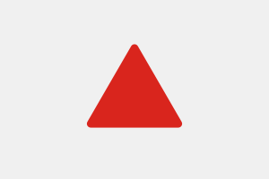

AL
Alagoas
Pendente de curadoria profunda
Baixar RICMS e benefícios de ICMS no portal oficial de Alagoas.
Arquitetura nacional para organizar RICMS, leis do imposto, benefícios fiscais, cBenef, alíquotas, ST, regimes e prova por UF.
O portal organiza a leitura por UF, categoria legal, regra de ICMS, benefício fiscal, documento e prova. Goiás continua como modelo profundo; os demais Estados ficam em curadoria fonte-a-fonte antes de nova publicação profunda.
Comece por RICMS e lei material; depois avance para anexos, benefícios, alíquotas, ST, regimes especiais, atos infralegais e prova documental.
A tese concreta sempre volta ao texto vigente no portal da UF, CONFAZ ou Planalto na data da operação.
348 atos estaduais mapeados e 165.316.891 caracteres de acervo organizados para virar capítulo por UF, com Goiás como modelo editorial aprovado.
Goiás é o modelo profundo da primeira fase. Distrito Federal, Mato Grosso e Mato Grosso do Sul seguem a mesma matriz de RICMS, benefícios, ST, fundos e prova.
ICMS em tela publicado
RICMS, leis, anexos e benefícios em telaCapítulo profundo publicado
RICMS, leis, anexos e benefícios em telaICMS em tela publicado
RICMS, leis, anexos e benefícios em telaICMS em tela publicado
RICMS, leis, anexos e benefícios em telaRegião de grande volume documental: legislação estadual, regimes setoriais, substituição tributária, benefícios industriais, comércio e serviços.
ICMS em tela publicado
RICMS, leis, anexos e benefícios em tela
MGICMS em tela publicado
RICMS, leis, anexos e benefícios em telaICMS em tela publicado
RICMS, leis, anexos e benefícios em telaICMS em tela publicado
RICMS, leis, anexos e benefícios em telaLeitura por RICMS, incentivos, importação, agroindústria, crédito, diferimento, documento fiscal e obrigações acessórias.
Organização por benefícios fiscais, desenvolvimento regional, fundos, regimes especiais, CONFAZ, indústria, atacado e prova documental.
Estrutura pronta para expansão
Texto legal estadual em preparacaoICMS em tela publicado
RICMS, leis, anexos e benefícios em telaEstrutura pronta para expansão
Texto legal estadual em preparacaoEstrutura pronta para expansão
Texto legal estadual em preparacaoEstrutura pronta para expansão
Texto legal estadual em preparacaoEstrutura pronta para expansão
Texto legal estadual em preparacaoEstrutura pronta para expansão
Texto legal estadual em preparacaoICMS em tela publicado
RICMS, leis, anexos e benefícios em telaEstrutura pronta para expansão
Texto legal estadual em preparacaoTrilha preparada para ICMS, incentivos regionais, Zona Franca, áreas de livre comércio, benefícios estaduais e conexão com atos federais.
Estrutura pronta para expansão
Texto legal estadual em preparacaoEstrutura pronta para expansão
Texto legal estadual em preparacaoEstrutura pronta para expansão
Texto legal estadual em preparacaoEstrutura pronta para expansão
Texto legal estadual em preparacaoEstrutura pronta para expansão
Texto legal estadual em preparacaoEstrutura pronta para expansão
Texto legal estadual em preparacaoEstrutura pronta para expansão
Texto legal estadual em preparacao13 UFs têm legislação em tela por capítulos. 14 UFs continuam bloqueadas para publicação profunda até que RICMS, benefícios, atos modificadores e fonte oficial limpa sejam conferidos.
Baixar RICMS e benefícios de ICMS no portal oficial de Alagoas.
Baixar RICMS, decretos modificadores e benefícios no portal oficial do Ceará.
Baixar RICMS/MA e anexos de benefícios no portal oficial do Maranhão.
Baixar RICMS/PB e benefícios no portal oficial da Paraíba.
Baixar RICMS/PE e benefícios no portal oficial de Pernambuco.
Baixar RICMS/PI e benefícios no portal oficial do Piauí.
Baixar RICMS/SE e benefícios no portal oficial de Sergipe.
Baixar RICMS e benefícios de ICMS no portal oficial do Acre.
Baixar RICMS e benefícios de ICMS no portal oficial do Amapá.
Separar Código Tributário, RICMS e benefícios; baixar o regulamento vigente do Amazonas.
Baixar RICMS/PA e benefícios no portal oficial do Pará.
Baixar RICMS/RO e benefícios no portal oficial de Rondônia.
Baixar RICMS/RR e benefícios no portal oficial de Roraima.
Baixar RICMS/TO e benefícios no portal oficial do Tocantins.